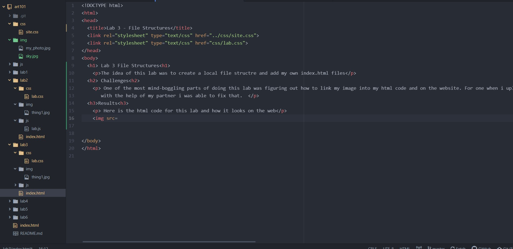

The idea of this lab was to create a local file structre and add my own index.html files
One of the most mind-boggling parts of doing this lab was figuring out how to link my image into my html code and on the website. For one when i uploaded a non jpeg image, it would show up as a text document and theni went to convert my image to a jpeg to solve that problem. Another problem was that when i first uploaded my picture to my code, it didnt show up on my site. with the help of my partner i was able to fix that.
Here is what the file structure looks like
